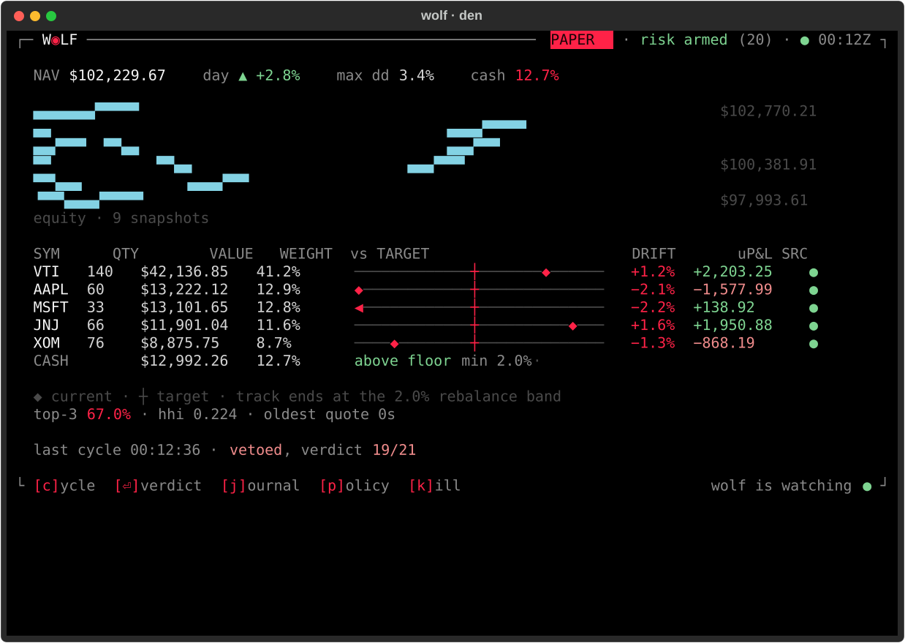
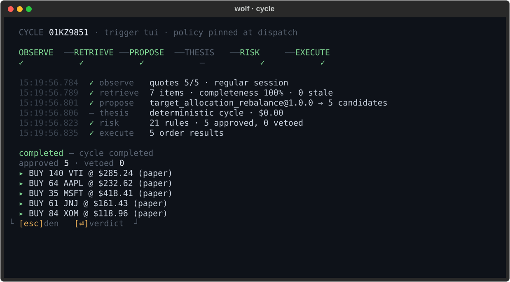
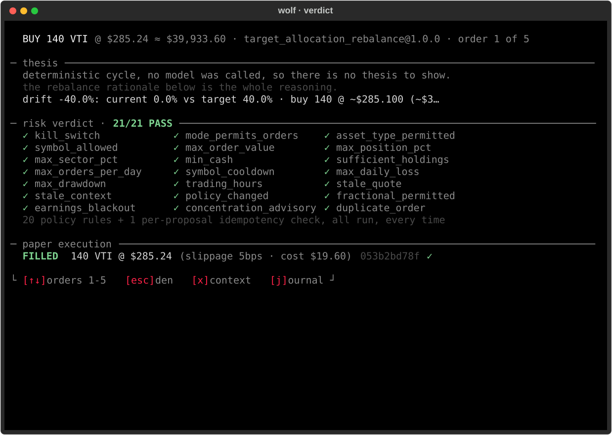
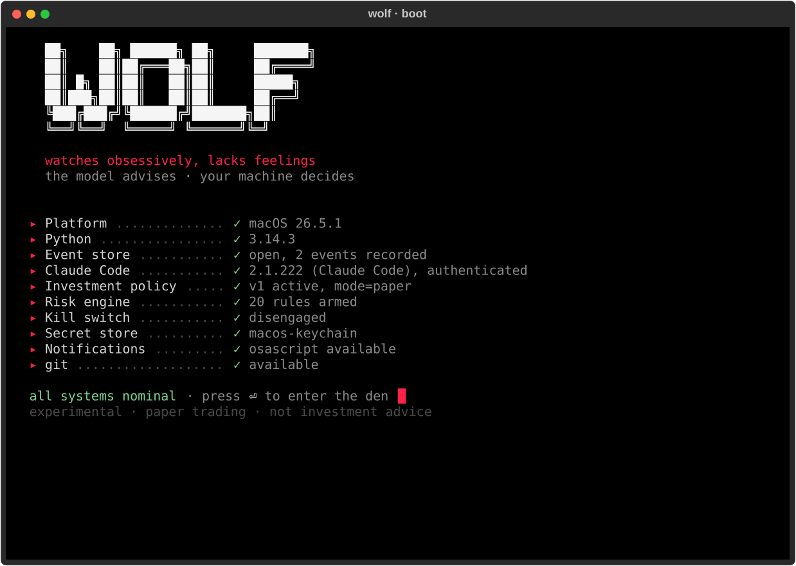
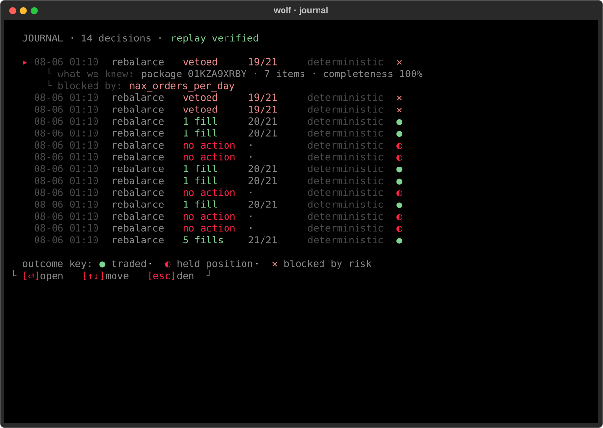
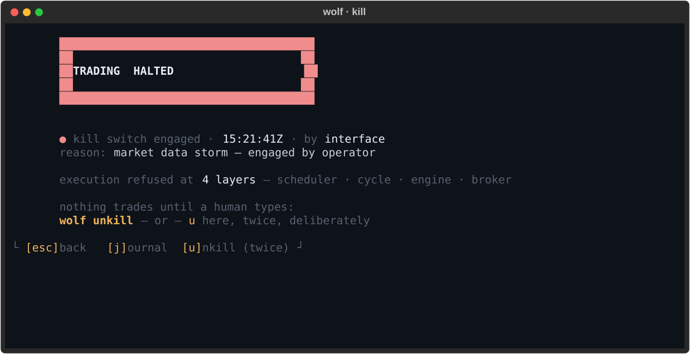

It reads the market and argues for a trade. Then twenty-one deterministic checks decide whether that trade happens — position caps, loss limits, quote staleness, cooldowns — and any one of them vetoes. How convincing the model was is not an input to any of them.
Every decision lands in an append-only log that replays byte-identically. Including the ones where the answer was no.
Prefer to read it first? Swap | sh for
| less — it touches two paths and prints them before
it starts. Then wolf setup turns your goals into a
policy you confirm field by field.
Real captures, produced by running the app — not mockups. Every figure on them is one the code actually computed.






A project that argues for honest software should be honest about itself. This list is maintained in the README too.
WOLF is experimental research software for paper trading. It is not investment advice, it does not predict markets, and it ships with no real-money execution path. Markets carry risk; you are responsible for your own decisions.